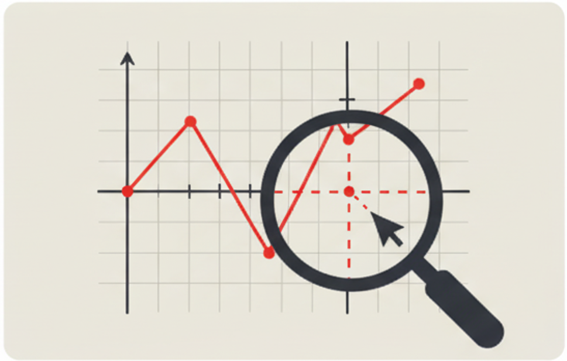

Rigid Body Analysis
3D rigid body with spring point supports and point loads.

Image Measurement
Measure details in an image.

Interpolator
Linear and Log Interpolation in 1D and 2D data.

Section Property Tool
Calculate section properties for a section made from rectangular segments.

Load Transfer Analysis
Typical load transfer analysis, using Tate and Rosenfeld fastener stiffness.

Plot Digitizer
Extract values from a 2D plot image, where each axis may be either linear or log scale, e.g. DTR form.

Beam Bending
Euler beam bending analysis with various support and load conditions.

Secondary Bending Analysis
Calculate secondary bending effects using a nonlinear beam analysis. This currently doesn't have explanatory documentation (in progress).

Freeze Plug Stresses
Calculate freeze plug interference stress and combine it with stress severity due to hole bearing and bypass tension

DT Analysis Checklist
A checklist tool for Damage Tolerance analysis compliance, following F&DT Manual standards.

Stress Transformation
Calculate 2D stress transformation and 3D principal stresses with Mohr's circle visualization.

Crack Growth Analysis
Fatigue crack growth analysis tool using the NASGRO equation.

Fuselage Cut-out Loads
Load redistribution around a fuselage door cut-out — frames, sills and skin shear per Niu §6.5, for damage-tolerance analysis.

Fuselage Pressure & Shell Stresses
Cabin-pressure differential from max operating altitude (14 CFR 43 App. E), then skin / frame / stringer stresses by equilibrium and strain compatibility (RAPID bending).

FAA AD Tools
Search for ADs by aircraft type/model, or fetch a specific AD by number. Data sourced directly from the Federal Register.